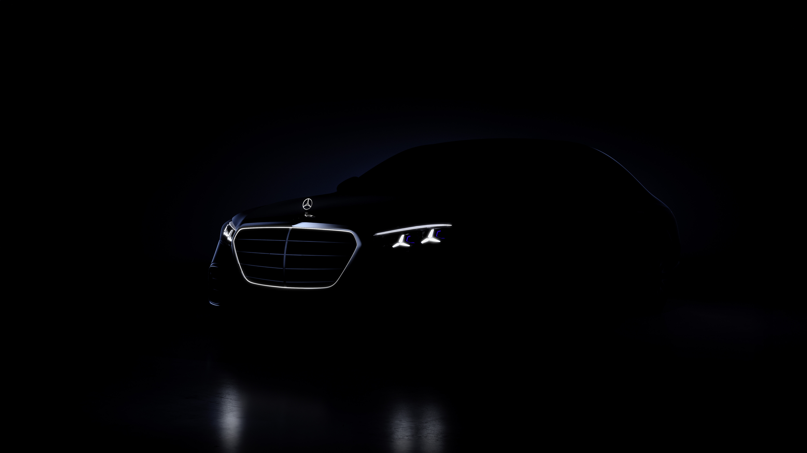

车能感知你的状态，并在你开口之前做出回应吗？
用户在车内的需求早已不止于通勤代步。长途驾驶、等待充电、高压通勤后的放松……这些碎片化场景中，座舱需要成为一个能主动调节身心状态的空间。Energizing 畅心空间是奔驰座舱内的多感官健康程序系统，覆盖车机主屏（HU）、后排屏幕（RSE/RSU）、超宽屏（Ultrascreen）、远程控制（RC）及手机端，将视频、音乐、氛围灯、座椅按摩统一编排，围绕用户情绪状态组织成完整的沉浸体验。
情绪曲线 × 生命体征感知
系统提供 Energy、Good Vibes、Focus、Relax、Power Nap、Fresh Breeze、Warm & Cosy、Performance（AMG 专属）等多种健康程序，覆盖从激动到睡眠的全情绪曲线。用户不需要理解底层功能逻辑，只选择"现在想要什么感觉"。
核心能力是 Energizing Coach / Vital Sensing。通过连接智能手表和 Healthkit 获取生物数据（心率、压力、睡眠质量），结合车内摄像头面部识别和座椅压力传感器，系统判断驾驶员当前状态，再结合路况和驾驶时长，通过 MyAI 推荐引擎主动推荐匹配的程序。从"用户去找功能"变成了"功能来找用户"。
多座位协同是另一个关键特性。HU/RSE 多屏多座位支持独立或联动控制，全车乘员各自享受个性化体验，或者同步体验同一个 Program。VAN 车型还有专门的座位选择逻辑，支持运行中动态增减座位。
远程预启动让用户在上车前就通过 RC 或手机启动 Energizing 程序，进入车内时氛围已经就位。Power Nap 模式配有闹钟机制，小憩结束时唤醒 popup 显示剩余时间并支持提前结束。

沉浸编排与渐进引导
交互上，Basescreen 使用 Carousel 轮播式程序选择，内容卡片横向排列，当前运行或上次选择的程序自动居中聚焦，减少查找成本。程序启动前有运行条件校验（最多显示 3 个失败原因），确保用户理解为什么无法运行。
Ultrascreen 全屏沉浸模式是视觉的核心亮点：程序运行时支持全屏动画铺满超宽屏，所有 UI 元素消失只剩下内容本身。控制面板通过手势（proximity signal）唤出，最大化沉浸感的同时保留可控性。视频画面与车内物理氛围灯色彩实时呼应，屏幕内容和车内灯光构成统一的色彩场域。
Vital Sensing 的连接流程做了渐进式引导设计：将手机授权→手表连接→数据获取拆解为清晰的步骤化流程（QR code 扫码授权），解决了早期"同一状态加多次 toast 导致用户迷失"的问题。推荐时机做了克制，不弹窗打断，而是在合适的上下文以 toast 方式非侵入呈现。
跨屏一致性贯穿整个系统：从 HU 到 VAN 后排到 RC 到 Ultrascreen，设计语言和交互模式保持统一，同时根据屏幕尺寸和场景适配布局。状态透明化做得很彻底，运行指示器（activation status indicator）让用户始终清楚程序是否在运行，多座位处理有明确的冲突规则（同程序合并/不同程序替换 + deactivation toast 通知）。